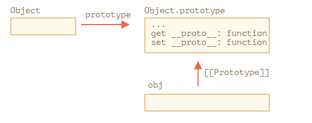

Trong bài đầu của chương này, chúng ta đã đề cập đến các phương thức hiện đại để setup một prototype.
__proto__ được cho là đã bị loại bỏ (chỉ các trình duyệt còn dữ lại)
Các phương thức hiện đại đó là:
proto như [[Prototype]] và tùy chọn là các bộ mô tả thuộc tính (property descriptors)[[Prototype]] của obj[[Prototype]] của obj thành protoChúng nên được sử dụng thay vì __proto__
Ví dụ:
let animal = {
eats: true
}
// Tạo một object mới với animal như một prototype
let rabbit = Object.create(animal)
console.log(rabbit.eats) // true
console.log(Object.getPrototypeOf(rabbit) === animal) // true
Object.setPrototypeOf(rabbit, {}) // thay đổi prototype của rabbit thành {}
Object.create có một tham số tùy chọn thứ hai là: bộ mô tả thuộc tính. Chúng ta có thể cung cấp thêm các thuộc tính cho object như thế này:
let animal = {
eats: true
}
let rabbit = Object.create(animal, {
jumps: {
value: true
}
})
console.log(rabbit.jumps) // true
Các bộ mô tả thì có cùng cấu trúc như đã mô tả ở bài 1.
Chúng ta có thể sử dụng Object.create để tạo một object clone thay vì dùng for...in:
let clone = Object.create(
Object.getPrototypeOf(obj),
Object.getOwnPropertyDescriptors(obj)
)
Điều này có thể copy chính xác một obj, bao gồm tất cả thuộc tính: có thể liệt kê và không liệt kê, thuộc tính dữ liệu và setter/getter - mọi thứ, và với chính xác [[Prototype]]
Như đã thấy thì chúng ta có nhiều cách để quản lý [[Prototype]]. Nhiều cách để làm cùng 1 thứ.
Tại sao?
Sau đây là nguyên nhân lịch sử
prototype của constructor function đã có từ xa xưaObject.create xuất hiện trong JS tiêu chuẩn. Nó cung cấp khả năng tạo một object với một prototype được cung cấp, nhưng không cung cấp khả năng get/set nó. Vì thế các trình duyệt thêm một thuộc tính "không thuộc JS tiêu chuẩn" là __proto__ để cho phép người dùng có thể get/set một prototype bất cứ lúc nào.Object.setPrototypeOf và Object.getProtypeOf được thêm vào JS tiêu chuẩn, để thực hiện chức năng tương tự như**proto**.Tại sao __proto__ bị thay thế bởi các hàm getPrototypeOf/setPrototypeOf? Đây là một câu hỏi thú vị, đòi hỏi chúng ta phải hiểu tại sao __proto__ khá tệ. Đọc thêm để biết câu trả lời.
Đừng thay đổi [[Prototype]] trên các object đang tồn tại nếu quan tâm đến vấn đề tốc độ
Về mặt kỹ thuật, chúng ta có thể get/set [[Prototype]] bất kỳ lúc nào. Nhưng thường thì chúng ta chỉ set một lần khi object khởi tạo và không thay đổi nó nữa: rabbit kế thừa từ animal, và nó sẽ không thay đổi.
Và các Javascript engine được tối ưu hóa cao cho việc này. Thay đổi một prototype "đang hoạt động" với Object.setPrototypeOf hoặc obj.__proto__= là một phép tất rất chậm bởi vì nó phá vỡ sự tối ưu hóa nội bộ cho các hoạt động truy cập đến thuộc tính object. Vì thế tránh sử dụng nó nếu bạn không biết nó làm gì, hoặc tốc độ Javasript không phải là vấn đề bạn quan tâm.
Như chúng ta đã biết, các object có thể được sử dụng để lưu trữ các cặp key/value
Nhưng nếu chúng ta cố tình lưu trữ một key do người dùng cung cấp (ví dụ người dùng nhập), chúng ta sẽ thấy một điều thú vị là: tất cả các key đều hoạt động tốt ngoại trừ "__proto__".
let obj = {}
let key = prompt("What's the key?", '__proto__')
obj[key] = 'some value'
alert(obj[key]) // [object Object], không phải là "some value"!
Ở đây, nếu người dùng nhập là __proto__, hành động gán ở trên sẽ bị bỏ qua.
Điều này không làm chúng ta ngạc nhiên lắm. __proto__ là một thuộc tính đặc biệt: nó nên là object hoặc null. Một string không thể trở thành một prototype.
Giả sử chúng ta không có ý định set prototype của object. Chúng ta chỉ muốn lưu cặp key/value và key được đặt tên là "__proto__". Vậy nên đây là bug!
Trong ví dụ bên trên, hậu quả gây ra không nghiêm trọng lắm. Nhưng trong một số trường hợp khác, chúng ta có thể gán value cho object, và sau đó prototype có thể bị thay đổi. Kết quả là việc thực thí có thể bị sai theo cách không mong muốn.
Điều tồi tệ hơn là các dev thường không nghĩ về khả năng này. Điều đó làm cho những lỗi như vậy khó nhận ra và thậm chí biến chúng thành các lỗ hổng bảo mật, đặt biệt là khi Javascript được sử dụng ở phía máy chủ.
Làm thế nào để tránh vấn đề này?
Đầu tiên, chúng ta chỉ cần chuyển qua sử dụng Map để lưu trữ thay vì một plain object, mọi thứ sẽ hoạt động tốt.
Nhưng Object cũng có thể giúp được, vì các nhà sáng lập ngôn ngữ đã nghĩ đến trường hợp này từ lâu rồi.
__proto__ không phải là một thuộc tính dữ liệu của object, nó là thuộc tính bộ truy cập của Object.prototype:

Vì thế, nếu obj.__proto__ được get hay set, tương ứng với việc getter/setter được gọi từ [[Prototype]]
Như đã nói ở đầu chương: __proto__ là cách để truy cập vào [[Prototype]], nó không phải là [[Prototype]]
Bây giờ, nếu chúng ta có ý định sử dụng một object mà không gặp vấn đề như trên, chúng ta có thể làm điều đó với một mẹo nhỏ:
let obj = Object.create(null)
let key = prompt("What's the key?", '__proto__')
obj[key] = 'some value'
alert(obj[key]) // "some value"
Object.create(null) tạo một object trống mà không có prototype ([[Prototype]] là null)
Vì thế, không có getter/setter __proto__. Bây giờ thì quá trình hoạt động bình thường/
Chúng ta có thể gọi những object như này là "very plain" hoặc "pure dictionnary" object, bởi vì chúng còn đơn giản hơn một plain object {...}
Nhược điểm của các object như vậy là thiếu các phương thức có sẵn, ví dụ toString:
let obj = Object.create(null)
alert(obj) // Error (no toString)
Để ý rằng hầu hết các phương thức object liên quan kiểu Object.something(...) như Object.keys(obj) - Chúng thuộc về Object to bự, nên vẫn hoạt động bình thường.
let chineseDictionary = Object.create(null)
chineseDictionary.hello = '你好'
chineseDictionary.bye = '再见'
alert(Object.keys(chineseDictionary)) // hello,bye
Các phương thức hiện đại để setup và truy cập trực tiếp vào prototype là:
proto như [[Prototype]] và tùy chọn là các bộ mô tả thuộc tính (property descriptors)[[Prototype]] của obj[[Prototype]] của obj thành protogetter/setter bằng __proto__ thì không an toàn nếu chúng ta muốn người dùng tự tạo key cho object. Bởi vì nếu người dùng nhập "__proto__" như là key, và nó sẽ gây ra lỗi, và đôi khi sẽ gây ra các kết quả không mong muốn.
Vì thế chúng ta có thể sử dụng Object.create(null) để tạo một "very plain" object mà không có __proto__, hoặc chuyển qua Map object.
Cũng như Object.create cung cấp một cách dễ dàng để shallow-copy một object với tất cả descriptor (bộ mô tả)
let clone = Object.create(
Object.getPrototypeOf(obj),
Object.getOwnPropertyDescriptors(obj)
)
Chúng ta cũng cần rõ ràng là __proto__ là getter/setter cho [[Prototype]] và nằm trong Object.prototype, như là các phương thức khác.
Chúng ta có thể tạo một object mà không có prototype bằng cách Object.create(null). Những object như vậy được sử dụng như là "pure dictionaries", chúng không có vấn đề gì với key "__proto__".
Các phương thức khác:
Tất cả các phương thức mà return về thuộc tính object (như Object.keys và một số khác) - chỉ return về thuộc tính của nó. Nếu chúng ta muốn các thuộc tính mà nó kế thừa, chúng ta có thể sử dụng for...in